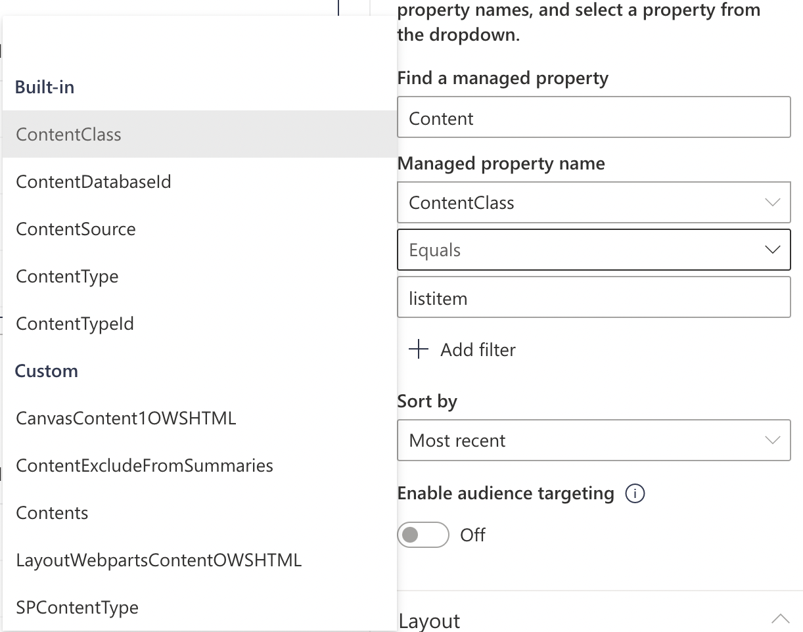
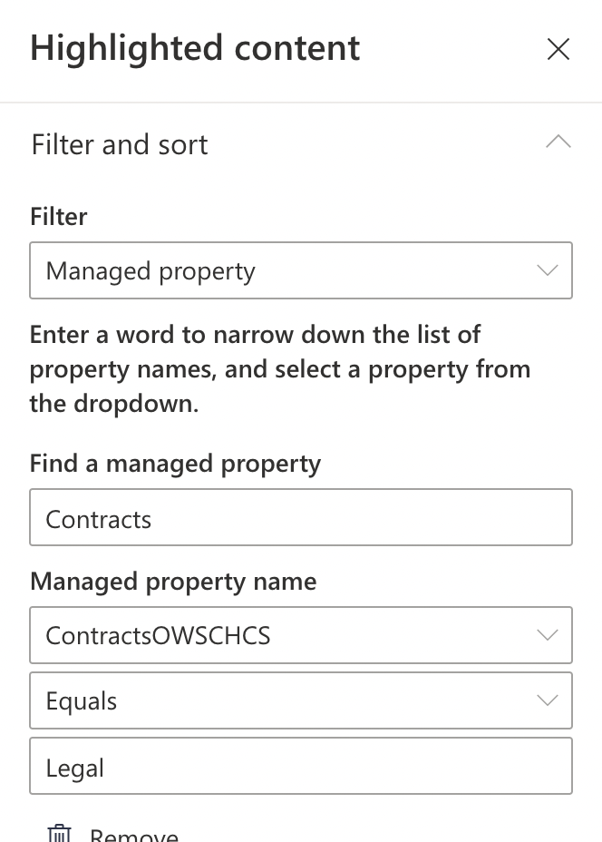
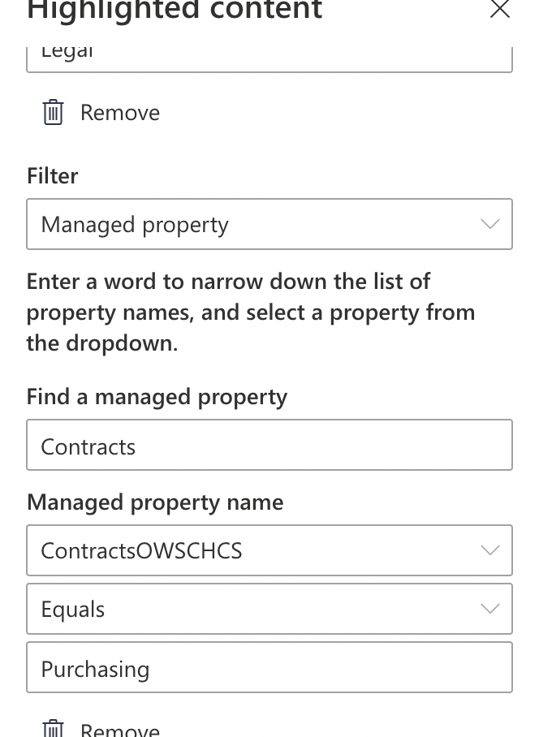
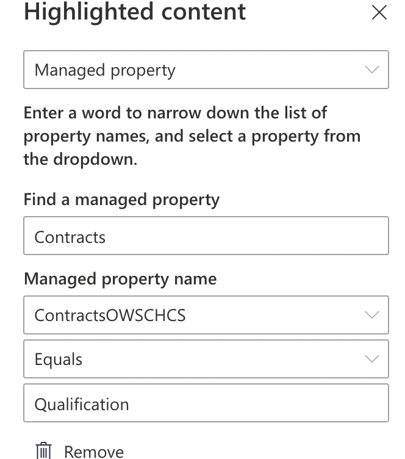
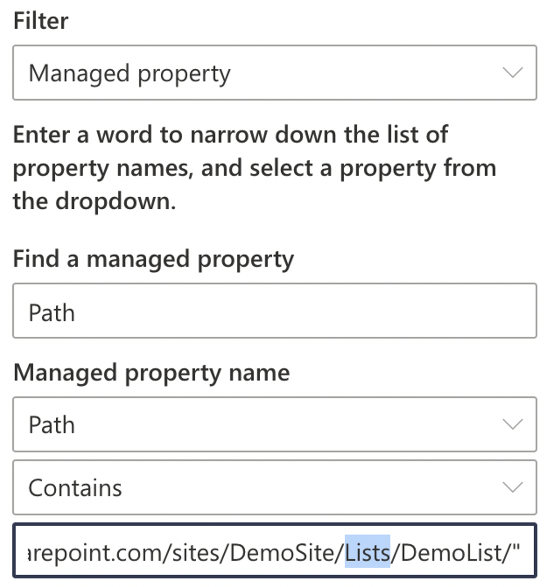
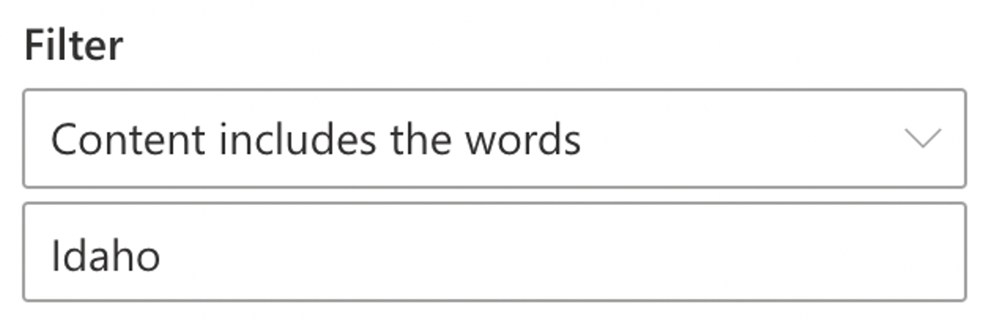
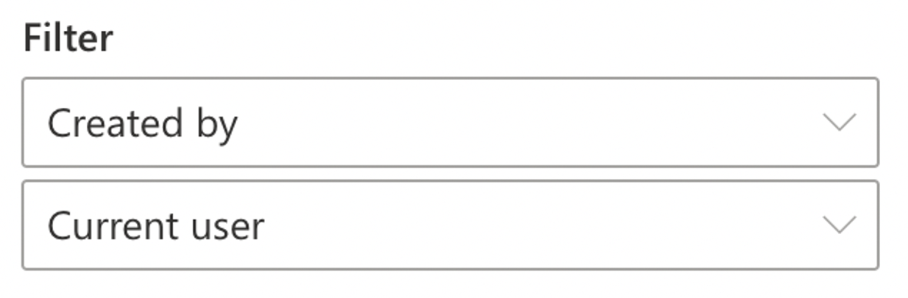

Advanced Highlighted Content Web Part
[!include[content-disclaimer](includes/content-disclaimer.md)]Highlighted Content Web Part - tl;dr
The Highlighted Content Web Part (HCWP) is used for displaying content from one or more buckets – more than one list, library, or data source in a single place on a page.
It's an out of the box web part - style options are Grid, List, Carousel, and Filmstrip. This article assumes you're a site owner and not looking to custom code your own solutions.
The type of content - and where you query it from – change your HCWP configuration and filtering choices.
HCWP filtering capabilities are more complex than most other modern web parts. You can use KQL, CAML, and/or Managed Properties to filter and display specific results. We'll cover examples of that here.
As a site owner making pages for SharePoint or Teams, you understand the value of automatically rolling up content from multiple lists, libraries, and sites to display them on a page. Using built-in list or library web parts work fine... but your end users never put things in just one place. They're empowered to self-organize their content across multiple sites! The Highlighted Content Web Part can help here, automatically showing users the right content on a page, regardless of its physical location.
Modern pages, modern web parts
Site Owners may remember classic web part pages and their content rollup web parts. The Highlighted Content Web Part is the successor to the Content Query and Content Search web parts. The mental model is very similar, but HCWPs only work in modern pages.
What should I learn?
To dig into the real power of the HCWP you'll need to increase your knowledge in key SharePoint areas and technologies. Here's the learning path you should traverse:
- HCWP fundamentals
- Site Columns
- Managed Properties and SharePoint Search
- KQL
- Maybe CAML (But, maybe you don't have to?)
1. Fundamentals
If you're new to the Highlighted Content Web Part you can start by reading Microsoft's documentation. In fact, even if you have used the HCWP before, this existing documentation is a must read.
Use the Highlighted content web part
This Community Docs article won't rehash what's already covered there.
2. Learn about Site Columns
Knowing what a Site Column is, and how it relates to SharePoint Search, will be important for setting up Managed Properties (the next step).
Start your Site Column learning with these Microsoft Community Docs articles:
Tip
It is fast and easy to make a new list or library column – but if there's a chance you think you'll need to filter by it with a HCWP, create that List Column into a Site Column instead. Taking an existing List Column and converting it to a Site Column can be a lot of manual work.
3. Managed Properties
Beyond the basic filter options of the HCWP (like "Title includes" or "content includes" or dates), the HCWP allows more advanced filtering and sorting by a Managed Property.
For the HCWPs, the Managed Property is one of two things:
- A built-in property, no search configuration required.
IsDocumentis an example - this one lets you include or exclude documents in a query. Another built-in Managed Property isAuthorwhich queries content based on the Microsoft 365 user who created (Created By) the object. - A Site Column associated Managed Property - where a Site Column in a list or library is made available through SharePoint Search as a Managed Property. This requires some configuration.
Managed Properties are available to filter and sort in HCWPs either through the regular filter interface or via the more customizable KQL and CAML interfaces. More on that later.
Start your Managed Property learning with this Microsoft Community Docs article:
And more here with Microsoft's documentation:
Tip
Is your recently-configured Managed Property ready for HCWP filtering or sorting yet? In SharePoint Online, sometimes it takes a little while once you've mapped the Crawled Property to the Managed Property before that Managed Property is available. While you're waiting, test availability via regular SharePoint Search first. If you can search for results by a Managed Property in Search, you can filter content by that same property in your HCWP.
4. Using KQL to query, filter, and sort
Once you've added a HCWP to a page, you'll have to tell the web part where to look, and what to display. At first, the web part's basic filter and sort options seem like they should cover most situations. But as you progress further into more complex projects (and your users realize the capability displaying very specific content on a page) you, the site owner, may find yourself needing to build out HCWPs with Custom Queries using KQL (Keyword Query Language) .
Good thing you set up all those Managed Properties from Site Columns already! KQL filtering and sorting is one of the payoffs for that work.
KQL runs a search over a specific area of content and returns results in your HCWP.
A very basic KQL query in a HCWP might look like:
author:"Patrick Doran"
While a more complex one might look like:
LastModifiedTime>=2021-06-01 AND LastModifiedTime<=2022-04-26
Note
Spacing counts – A space between a colon and a " might return a very different result.
Start learning KQL by reading Microsoft's reference:
KQL Pro Tips
A Path to success – The Path property is built -in and can quickly narrow down scope if you know the list(s) and library(s) you want to get content from.
Path:"https://mytenantname.sharepoint.com/sites/HumanResources/Enrollment"Narrow it down further with the built-in Filetype property:
Path:"https://mytenantname.sharepoint.com/sites/HumanResources/Enrollment" AND Filetype:"XLSX"Many conditions – If you have a lot of conditions, wrap statements in parentheses to make readability easier and enforce what should be AND versus OR.
(Author:"Patrick Doran" OR Author:"Sally SharePoint") AND (Filetype:xlsx OR Filetype:docx)
Helpful built in syntax for HCWPs
Hopefully now you understand the why behind Managed Properties and KQL. Below are examples of helpful KQL search syntax terms that are all built into SharePoint Online (and probably are there for your SharePoint 2019 site). They're already configured and can save a lot of time in many HCWP scenarios.
Use these to filter and sort your content:
| Managed Property | Type | Note | Example |
|---|---|---|---|
IsDocument |
True or False | Identifies if content is a Document or Page. List Items are are false here. | IsDocument:"True" |
Filetype |
File extension | An extension, like XLSX or DOCX or PDF | Filetype:xlsx |
Author |
Someone's name, or the SharePoint property for the current user | This more or less equates to the SharePoint 'Created By' field. | Author:"Tricia Teams" or Author:{User.Name} |
Path |
A URL, or part of a URL | It might be a URL of a specific list, library, or everything in the whole tenant. Note you cann use wildcards ('*') here and in other KQL queries. | Path: https://mytenant.sharepoint.com/sites/*. |
ContentType |
Text | Any available Content Type that SharePoint Search can access | ContentType: Document or ContentType: EnrollmentDocs |
There are many more built in Managed Properties you can use; these are just some of the most commonly useful ones.
Tip
A Find a managed property search in the HCWP filter configuration panel will show you some of what's built in versus what's custom:

4. Using CAML to query and filter
If your HCWP is displaying content from a specific document or pages library, you can use CAML. If you've ever seen an XML file or RSS feed, CAML looks a lot like that.
An example CAML statement to filter data in a HCWP might look like:
<Query>
<Where>
<Geq>
<FieldRef Name="Expires"/>
<Value Type="DateTime">
<Today/>
</Value>
</Geq>
</Where>
<OrderBy>
<FieldRef Name="Modified"/>
</OrderBy>
</Query>
This is looking for a column called Expires, where the value is equal to today or after and its sort order is by Modified date.
Start learning CAML via Microsoft's documentation:
Note
CAML vs KQL: Which one do I use?
With two Custom Filter options for a Highlighted Content Web Part, picking one comes down to the type of data you're filtering. A HCWP scoped to a single list or Document/Pages library only lets you filter with CAML, while all other scopes let you filter with KQL.
In many scenarios, KQL might be able to do everything you need, and may be easier to write versus long, complex nested CAML queries.
If you want to use KQL in a document library, just set the query to the site (rather than a particular library) and scope it with the Path managed property.
Real-world examples
The rest of this article will provide scenarios and tested examples to show you some possibilities.
Tip
Since this article is part of the Microsoft Community Docs, you're encouraged to contribute your own scenarios! Get started contributing here: Microsoft Community Docs
Scenario 1: Contract documents across siloed department sites
In your organization, a new contract process required documents from different departments. The vendor qualification document sat in the Quality team, the contract review doc was with Legal, and the vendor initiation worksheet was with Purchasing. These documents lived in each department's own separate Communications Sites and needed to be presented in on a single page.
This looks like a job for the Highlighted Content Web Part!
Your libraries might be in sites like:
https://mytenant.sharepoint.com/sites/Legal/Shared Documents/https://mytenant.sharepoint.com/sites/Quality/Shared Documents/https://mytenant.sharepoint.com/sites/Purchasing/Shared Documents/
As the person setting up the HCWP:
- You'll use a HCWP to retrieve documents from 3 different sites in the same tenant. Each document will have a shared Site Column with a value applied. The HCWP's job is to return any documents with a matching value for this Site Column.
- You'll query based off a Site Column called "Contracts" and will be looking for a value of Legal, Purchasing, or Qualifications
- You'll make sure the same Site Column is available in all three sites, in the three libraries.
Note
Adding the Site Column is probably easiest if you can do it the SharePoint Admin Center. Don't forget to publish it!
Setup with regular Filtering (not a Custom Query)
In your HCWP, set your Source to be All Sites or maybe a Hub Site if you're using one. You could also pick 'Selected Sites' if you're' sure the documents you want to show will only come from Legal, Quality, and Purchasing. libraries. Leave the Type as Documents and Document Type as Any.
Under Filter, you could pick Title includes the words and add one filter each for Legal, Quality, and Purchasing as long as those are the file titles. This option is a little riskier because someone could upload another file with those words in the title and they'd also appear in the web part.
The safer call here is to use SharePoint metadata. Since you've already added the Contracts column as a Site Column, and flagged each file as wither Purchasing, Legal, or Qualification, let's use that instead.
In Site Settings, check to see if this column is already a Managed Property with a Crawled Property associated with it. Once that's done, head back to your page, edit your HCWP, and set the Filter values based on your Managed Property. You'll find it using the word 'Contract' and the Managed Property Name will display soon. In these screen captures, we've added the three filters (of the same type, so they are OR not AND)



And that should be all you need to do. If you've uploaded and tagged your documents, added the right values to the Site Columns, and configured the Managed Properties correctly, you'll see three docs displaying in the web part.
Setup up with KQL
Assuming you've set up Managed and Crawled properties for the Contracts column in SharePoint Admin center, you should now have a property like ContractsOWSCHCS (though yours might be named differently).
In your HCWP, choose 'Custom Query' instead of 'Filter' and set the Source to be 'All Sites'. Now enter this in the Query text (KQL) field, and click Apply:
isDocument=true AND (ContractsOWSCHCS: Legal OR ContractsOWSCHCS: Purchasing OR ContractsOWSCHCS: Qualification)
Your HCWP should now show your three documents.
Setting up with CAML
CAML is not supported in this scenario. As we're looking for documents across multiple sites. CAML only shows up as a HCWP custom filter option when you select 'A document library in this site' or 'A page library in this site' for the Query source.
Scenario 2: Showing the right content at the right time
Another common scenario might be displaying Human Resources documents on an intranet Communication Site during annual enrollment. There are many supporting documents for medical, dental, vision, wellness, life insurance, etc that an employee might need to access. These benefits documents are changed each year at a specific go-live date for open enrollment, but the structure of the Benefits site generally stays the same.
There is a short period of time where the current year and future year documents need to both be accessible as well.
Using SharePoint metadata columns in libraries to indicate benefit type and year - paired with a HCWP - make for easy transitions as the HCWP filtering query just needs to be updated.
In this scenario we'll assume:
- Our single HCWP will appear on a page in a Communications Site.
- A single SharePoint Document Library with extra two columns – a date one for year, and a choice one for benefit type.
- Since this is a formal process, you'll make a new Content Type and Site Columns up front.
- You, the site owner, will manually change the dates in the queries when enrollment season starts and ends.
Scenario library setup:
- Create a library
- Create Content Type
- Create site columns for Year and Benefit Type columns and add those to your Content Type.
- Enable the new Content Type in the library. (This will also add your Site Columns.)
- In Site Collection Search, map the Crawled Properties to Managed Properties for both Site Columns. Pay special attention to the Year column, which needs to be a date/time Managed Property.
- Add documents to the library, and make sure you populate the Benefit Type and Year values.
- Go get a coffee or tea and wait for SharePoint Search to crawl your library and site columns.
Your new library might look like:
| Name | Year | Benefit Type | Content Type |
|---|---|---|---|
| Dental for Annual Enrollment.docx | 1/1/2023 | Dental | Enrollment |
| Life Insurance Enrollment.pdf | 1/1/2022 | Life Insurance | Enrollment |
| Medical Insurance Enrollment Form.pdf | 1/1/2023 | Medical | Enrollment |
| Vision Enrollment Form.pdf | 1/1/2023 | Vision | Enrollment |
| Wellness Worksheet.xlsx | 1/1/2022 | Wellness | Enrollment |
Setting up with regular Filtering (not a Custom Query)
Add your HCWP to the page, pick Filter instead of Custom query, and set your source to be the document library with your Content Type and Site Columns.
Under Filter, search for the Enrollment Content type you made. Then add additional Managed Property filters for Year which is a Site Column you added. And because it's a date/time column, the HCWP will ask you to specify a range of time to filter. Before, After, or Between.
In this case – set Year between 01/01/22 and 12/31/22. The HCWP will show only documents from that library for 2022.
Setting up with KQL
Add your HCWP and pick Custom Query, and set your source to be the entire site. (If you select Document Library, the HCWP will default to CAML).
Your KQL query will look something like this:
ContentType: "Enrollment" AND (EnrollmentType: "Vision" OR EnrollmentType: "Dental" OR EnrollmentType: "Medical") AND (Year>=2022-01-01 AND Year<=2022-12-31)
In this example, ContentType is a built in Managed Property that allows you to reference the Content Type you already associated with your library.
Setting up with CAML
Add your HCWP and set the scope to be this one document library. When you pick Custom Query, the interface will look a lot like the KQL syntax query, but it will specifically request you input CAML.
Tip
Valid CAML Query isn't trivial to write. There are a variety of 3rd party tools and plugins designed to connect with your SharePoint site and help you build out the query that'll work in your environment.
Scenario 3: Showing very specific, personalized list items
Often in SharePoint you'll have a list that becomes a database – a source of truth for many users. Often there is some criteria – "top 10 highest grants this month" or "All the grants issued in Hawaii" – that really matter. Those can be put in a page using a HCWP.
For our scenario, we have a large list (10k items) of grant applications that was imported from a spreadsheet. Customer wants to see cards on a page with just items they've created and just ones from their home territory of Idaho.
Setting up with regular HCWP Filtering
This is probably the easiest approach. We'll use three filters to meet this customer's needs.
Set source to All Sites. First filter with be using the built-in Managed Property of Path.



Setting this up with CAML
CAML won't work here – it only works for documents and pages.
Setting up this scenario with KQL
Add your HCWP and pick Custom Query and set your source to be the entire site. You'll now write KQL syntax that scopes the returned list items to the Path of your List, filters by any item that has the word 'Idaho" in it, and only items where you've created or modified:
(Path:https://mytenant.sharepoint.com/sites/DemoSite/Lists/Demo%20Grant%20List AND "Idaho" AND Author:{User.Name})
Pro HCWP Tips
- The built-in Managed Property
Pathhas real power. It lets you specify scope all the way from a single list item to an entire tenant. No configuration required. With some wildcards and a little time, you can build some useful KQL to bring back content you want. - If you can configure your Managed and Crawled Properties in the SharePoint admin center, you should.
- Once you get proficient at HCWPs, you might rely exclusively on Custom Queries with KQL for filtering. But if you can use the built-in filters under Filter and Sort, maybe you should? The next person coming along to update your web part might not have read this article and HCWP's built-in filters are a little easier to read if you're new.
- The built-in filtering guidance from Microsoft's documentation is worth remembering: "When you use multiple filters, your results will be based on OR operations for filters of the same type, and AND operations for filters of different types."
- The Trending sort and filter pulls from OneDrive, too. That may/may not be what you want.
- If you want to enable Audience Targeting in your HCWP, you need to also enable it in the list/library first.
Keep Reading
The time you invest in learning the HCWP will help you in other areas of the Microsoft 365 platform, especially with SharePoint search. Keep learning:
Content Type Filters in Modern SharePoint from Joanne Klein
Modern SharePoint Web Parts: Highlighted Content Web Part from Lightning Tools
Highlighted Content Web Part Custom Query from Lighting Tools
Managed Properties in SharePoint Online and Crawled vs Managed Properties in SharePoint Online from SharePoint Maven
SharePoint Online Highlighted Content Web Part from SPGuides.com
CAML Query Examples in SharePoint from SPGuides.com
How Do Site Columns Become Managed Properties - Thus Available for Search from Microsoft Community Docs
Crawled and Managed Properties Overview from Microsoft
How to Display a list of sites on a Modern Web Part page from TechNet
KQL Basics in SharePoint from Mikael Svenson
CAML Query Syntax in SharePoint from SharePoint Cafe
Principal author: Patrick M. Doran. Thanks to Emily Mancini for contributing scenario examples.